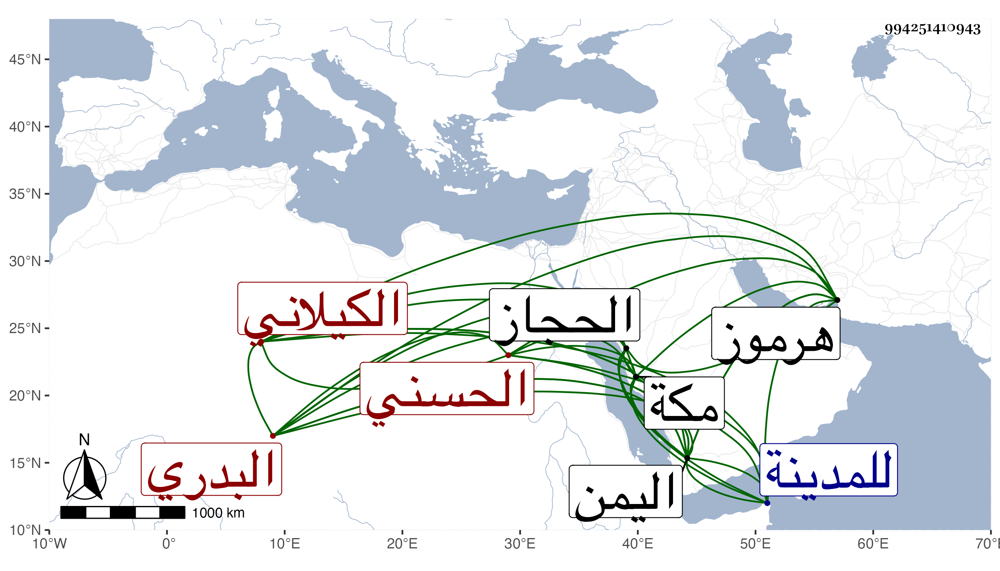

0902Sakhawi.DawLamic.ITO20230111-ara1.EIS1600.994251410943
Biography ID: 994251410943
77
عبد الله بن عامر المحيسني بن محمد الحسني البدري نسبة لبدر من الحجاز الكيلاني ويعرف بالمساوي بفتح الواو وضم الميم لصحبته الشريف أحمد بن يحيى الذروي الماضي ، ممن تردد للبلاد كبغداد وهرموز وجال بلاد اليمن وغيرها ثم قطن مكة من سنة أربع وثمانين وتكررت زيارته للمدينة فأولها صحبة علي بن طاهر شيخ اليمن ثم صحبة محي الدين محمد بن شيخه أحمد من درب الماشي ثم في سنة ثمان وتسعين في قافلة هو قائدها وقدمها في رابع عشر رجب وكنت بها فلقيني وأخبرني أن سنه يزيد على مائة وأربع وثلاثين سنة وأنكرت أنا وغيري ذلك والظاهر أنه لا يزيد على الستين وبالجملة فلكثيرين سيما عرب تلك النواحي فيه اعتقاد بحيث كانوا مكرمين له في طول الدرب .
